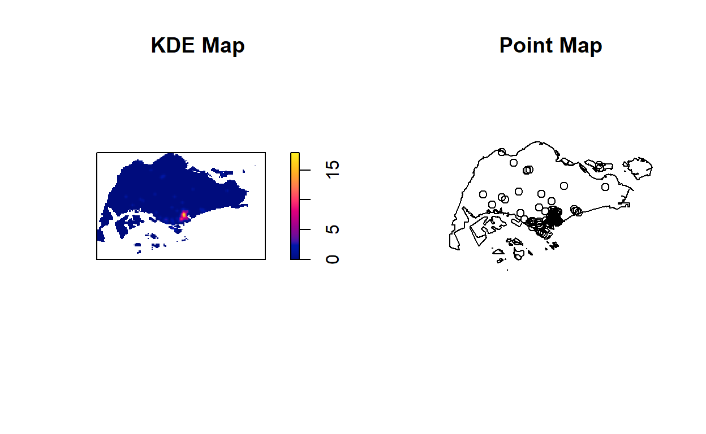

1 Introduction
In recent years, the emergence of numerous peer-based business models has empowered individuals across the globe to become micro-entrepreneurs, earning money from their idle property and spare time. This phenomenon, entitled the sharing economy, has seen unprecedented growth in terms of user numbers, enabling new avenues of economic and social interaction (Sundararajan, 2016).
Since its inception in 2008, Airbnb has expanded into over 34,000 cities across 191 countries. Uncommonly for a sharing economy company, Airbnb transitioned into profitability in 2016, demonstrating proof-of-concept for the validity of sharing economy within the global market (Stone & Zaleski, 2017).
Interestingly, Singapore is one of the global city that has yet to legalise short-term rentals offered by platforms such as Airbnb (Read more at https://www.todayonline.com/singapore/short-term-home-sharing-remains-illegal-singapore-airbnb-disappointed). However, during my recent visit to Inside Airbnb (http://insideairbnb.com/about.html), an independent, non-commercial set of tools and data that allows anyone to explore how Airbnb is really being used in cities around the world, it came to my attention that there are data sets for Singapore.
This analysis consist of two sections: 1) Airbnb Distribution in 2019 2) Impact of COVID-19
2 Data
- Airbnb Listings (June 2019 & July 2021) is the Airbnb Listing in Singapore for the year 2019 and 2021. It is in csv format, and can be taken from http://insideairbnb.com/get-the-data.html
- Hotels data is the list of hotels in Singapore. It is in csv format, and can be extracted from SLA OneMap Service using onemapsapi.
- Tourist Attractions data is the list of tourist attractions in Singapore. It is in csv format, and can be extracted from SLA OneMap Service using onemapsapi.
- MrtLrtStnPtt contains all the Mrt and Lrt stations in Singapore. It is in ESRI shapefile format, and can be taken from https://datamall.lta.gov.sg/
- MP14_SUBZONE_WEB_PL is URA 2014 Master Plan Planning Subzone boundary data. It is in ESRI shapefile format, and can be taken from https://www.data.gov.sg/.
- CostalOutline is the national boundary of Singapore. It is in ESRI shapefile format, and can taken from SLA website.
3 Setting Up the Environment
The following code chunk install the following packages:
- maptools to convert Spatial objects into ppp format
- sf to handle geospatial data
- raster to convert image output generate by spatstat into raster format.
- spatstat to perform 1st and 2nd-order spatial point patterns analysis and derive kernel density estimation (KDE) layer
- tmap to create choropleth maps
- tidyr to tidy messy data
- readr to import csv
Show code
packages = c('maptools', 'sf', 'raster','spatstat', 'tmap', 'tidyr', 'readr')
for (p in packages){
if(!require(p, character.only = T)){
install.packages(p)
}
library(p,character.only = T)
}
4 Spatial Data Wrangling
4.1 Importing Geospatial Data
4.1.1 MrtLrt
4.1.1.1 Importing
The following code uses st_read function of sf package to import MrtLrt geospatial data sets.
Show code
mrtlrt_sf <- st_read(dsn = "data/geospatial", layer="MRTLRTStnPtt")
Reading layer `MRTLRTStnPtt' from data source
`C:\kwekyichen\IS415_blog\_posts\2021-09-16-takehome-ex02\data\geospatial'
using driver `ESRI Shapefile'
Simple feature collection with 185 features and 3 fields
Geometry type: POINT
Dimension: XY
Bounding box: xmin: 6138.311 ymin: 27555.06 xmax: 45254.86 ymax: 47854.2
Projected CRS: SVY21The MrtLrt data have 185 features with 3 fields. The projected CRS is SVY21. The geometry type is in point.
4.1.1.2 Check CRS
Next, we use st_crs function of sf to check the CRS.
Show code
st_crs(mrtlrt_sf)
Coordinate Reference System:
User input: SVY21
wkt:
PROJCRS["SVY21",
BASEGEOGCRS["SVY21[WGS84]",
DATUM["World Geodetic System 1984",
ELLIPSOID["WGS 84",6378137,298.257223563,
LENGTHUNIT["metre",1]],
ID["EPSG",6326]],
PRIMEM["Greenwich",0,
ANGLEUNIT["Degree",0.0174532925199433]]],
CONVERSION["unnamed",
METHOD["Transverse Mercator",
ID["EPSG",9807]],
PARAMETER["Latitude of natural origin",1.36666666666667,
ANGLEUNIT["Degree",0.0174532925199433],
ID["EPSG",8801]],
PARAMETER["Longitude of natural origin",103.833333333333,
ANGLEUNIT["Degree",0.0174532925199433],
ID["EPSG",8802]],
PARAMETER["Scale factor at natural origin",1,
SCALEUNIT["unity",1],
ID["EPSG",8805]],
PARAMETER["False easting",28001.642,
LENGTHUNIT["metre",1],
ID["EPSG",8806]],
PARAMETER["False northing",38744.572,
LENGTHUNIT["metre",1],
ID["EPSG",8807]]],
CS[Cartesian,2],
AXIS["(E)",east,
ORDER[1],
LENGTHUNIT["metre",1,
ID["EPSG",9001]]],
AXIS["(N)",north,
ORDER[2],
LENGTHUNIT["metre",1,
ID["EPSG",9001]]]]From the result above, even though the mrtlrt_sf is projected in svy21, the last line indicates that the EPSG is 9001. It is wrong because the correct EPSG code for svy21 should be 3414.
4.1.1.3 Assign EPSG code to a simple feature data frame
The following code chunk will assign the correct EPSG code to mrtlrt_sf using st_set_crs function of sf package
Show code
mrtlrt_sf <- st_set_crs(mrtlrt_sf, 3414)
Now that we have assign the correct EPSG code to mrtlrt_sf, we will check the CRS again using st_crs function of sf
4.1.1.4 Check CRS again
Show code
st_crs(mrtlrt_sf)
Coordinate Reference System:
User input: EPSG:3414
wkt:
PROJCRS["SVY21 / Singapore TM",
BASEGEOGCRS["SVY21",
DATUM["SVY21",
ELLIPSOID["WGS 84",6378137,298.257223563,
LENGTHUNIT["metre",1]]],
PRIMEM["Greenwich",0,
ANGLEUNIT["degree",0.0174532925199433]],
ID["EPSG",4757]],
CONVERSION["Singapore Transverse Mercator",
METHOD["Transverse Mercator",
ID["EPSG",9807]],
PARAMETER["Latitude of natural origin",1.36666666666667,
ANGLEUNIT["degree",0.0174532925199433],
ID["EPSG",8801]],
PARAMETER["Longitude of natural origin",103.833333333333,
ANGLEUNIT["degree",0.0174532925199433],
ID["EPSG",8802]],
PARAMETER["Scale factor at natural origin",1,
SCALEUNIT["unity",1],
ID["EPSG",8805]],
PARAMETER["False easting",28001.642,
LENGTHUNIT["metre",1],
ID["EPSG",8806]],
PARAMETER["False northing",38744.572,
LENGTHUNIT["metre",1],
ID["EPSG",8807]]],
CS[Cartesian,2],
AXIS["northing (N)",north,
ORDER[1],
LENGTHUNIT["metre",1]],
AXIS["easting (E)",east,
ORDER[2],
LENGTHUNIT["metre",1]],
USAGE[
SCOPE["Cadastre, engineering survey, topographic mapping."],
AREA["Singapore - onshore and offshore."],
BBOX[1.13,103.59,1.47,104.07]],
ID["EPSG",3414]]From the result above, we have successfully assign EPSG 3414 to mrtlrt_sf.
4.1.2 CostalOutline
4.1.2.1 Importing
The following code uses st_read function of sf package to import CostalOutline geospatial data sets.
Show code
sg_sf <- st_read(dsn = "data/geospatial", layer="CostalOutline")
Reading layer `CostalOutline' from data source
`C:\kwekyichen\IS415_blog\_posts\2021-09-16-takehome-ex02\data\geospatial'
using driver `ESRI Shapefile'
Simple feature collection with 60 features and 4 fields
Geometry type: POLYGON
Dimension: XY
Bounding box: xmin: 2663.926 ymin: 16357.98 xmax: 56047.79 ymax: 50244.03
Projected CRS: SVY21The CostalOutline data have 60 features with 4 fields. The projected CRS is SVY21. The geometry type is polygon.
4.1.2.2 Check CRS
Show code
st_crs(sg_sf)
Coordinate Reference System:
User input: SVY21
wkt:
PROJCRS["SVY21",
BASEGEOGCRS["SVY21[WGS84]",
DATUM["World Geodetic System 1984",
ELLIPSOID["WGS 84",6378137,298.257223563,
LENGTHUNIT["metre",1]],
ID["EPSG",6326]],
PRIMEM["Greenwich",0,
ANGLEUNIT["Degree",0.0174532925199433]]],
CONVERSION["unnamed",
METHOD["Transverse Mercator",
ID["EPSG",9807]],
PARAMETER["Latitude of natural origin",1.36666666666667,
ANGLEUNIT["Degree",0.0174532925199433],
ID["EPSG",8801]],
PARAMETER["Longitude of natural origin",103.833333333333,
ANGLEUNIT["Degree",0.0174532925199433],
ID["EPSG",8802]],
PARAMETER["Scale factor at natural origin",1,
SCALEUNIT["unity",1],
ID["EPSG",8805]],
PARAMETER["False easting",28001.642,
LENGTHUNIT["metre",1],
ID["EPSG",8806]],
PARAMETER["False northing",38744.572,
LENGTHUNIT["metre",1],
ID["EPSG",8807]]],
CS[Cartesian,2],
AXIS["(E)",east,
ORDER[1],
LENGTHUNIT["metre",1,
ID["EPSG",9001]]],
AXIS["(N)",north,
ORDER[2],
LENGTHUNIT["metre",1,
ID["EPSG",9001]]]]Similarly, even though the sg_sf is projected in svy21, the last line indicates that the EPSG is 9001. It is wrong because the correct EPSG code for svy21 should be 3414.
4.1.2.3 Assign EPSG code to a simple feature data frame
The following code chunk will assign the correct EPSG code to sg_sf using st_set_crs function of sf package
Show code
sg_sf <- st_set_crs(sg_sf, 3414)
Now that we have assign the correct EPSG code to sg_sf, we will check the CRS again using st_crs function of sf
4.1.2.4 Check CRS again
Show code
st_crs(sg_sf)
Coordinate Reference System:
User input: EPSG:3414
wkt:
PROJCRS["SVY21 / Singapore TM",
BASEGEOGCRS["SVY21",
DATUM["SVY21",
ELLIPSOID["WGS 84",6378137,298.257223563,
LENGTHUNIT["metre",1]]],
PRIMEM["Greenwich",0,
ANGLEUNIT["degree",0.0174532925199433]],
ID["EPSG",4757]],
CONVERSION["Singapore Transverse Mercator",
METHOD["Transverse Mercator",
ID["EPSG",9807]],
PARAMETER["Latitude of natural origin",1.36666666666667,
ANGLEUNIT["degree",0.0174532925199433],
ID["EPSG",8801]],
PARAMETER["Longitude of natural origin",103.833333333333,
ANGLEUNIT["degree",0.0174532925199433],
ID["EPSG",8802]],
PARAMETER["Scale factor at natural origin",1,
SCALEUNIT["unity",1],
ID["EPSG",8805]],
PARAMETER["False easting",28001.642,
LENGTHUNIT["metre",1],
ID["EPSG",8806]],
PARAMETER["False northing",38744.572,
LENGTHUNIT["metre",1],
ID["EPSG",8807]]],
CS[Cartesian,2],
AXIS["northing (N)",north,
ORDER[1],
LENGTHUNIT["metre",1]],
AXIS["easting (E)",east,
ORDER[2],
LENGTHUNIT["metre",1]],
USAGE[
SCOPE["Cadastre, engineering survey, topographic mapping."],
AREA["Singapore - onshore and offshore."],
BBOX[1.13,103.59,1.47,104.07]],
ID["EPSG",3414]]We have successfully set the EPSG to 3414 for sg_sf.
4.1.3 MPSZ
4.1.3.1 Importing
The following code uses st_read function of sf package to import MP14_SUBZONE_WEB_PL geospatial data sets.
Show code
mpsz_sf <- st_read(dsn = "data/geospatial", layer = "MP14_SUBZONE_WEB_PL")
Reading layer `MP14_SUBZONE_WEB_PL' from data source
`C:\kwekyichen\IS415_blog\_posts\2021-09-16-takehome-ex02\data\geospatial'
using driver `ESRI Shapefile'
Simple feature collection with 323 features and 15 fields
Geometry type: MULTIPOLYGON
Dimension: XY
Bounding box: xmin: 2667.538 ymin: 15748.72 xmax: 56396.44 ymax: 50256.33
Projected CRS: SVY21The mpsz data have 323 features with 15 fields. The projected CRS is SVY21. The geometry type is multipolygon.
4.1.3.2 Check CRS
Show code
st_crs(mpsz_sf)
Coordinate Reference System:
User input: SVY21
wkt:
PROJCRS["SVY21",
BASEGEOGCRS["SVY21[WGS84]",
DATUM["World Geodetic System 1984",
ELLIPSOID["WGS 84",6378137,298.257223563,
LENGTHUNIT["metre",1]],
ID["EPSG",6326]],
PRIMEM["Greenwich",0,
ANGLEUNIT["Degree",0.0174532925199433]]],
CONVERSION["unnamed",
METHOD["Transverse Mercator",
ID["EPSG",9807]],
PARAMETER["Latitude of natural origin",1.36666666666667,
ANGLEUNIT["Degree",0.0174532925199433],
ID["EPSG",8801]],
PARAMETER["Longitude of natural origin",103.833333333333,
ANGLEUNIT["Degree",0.0174532925199433],
ID["EPSG",8802]],
PARAMETER["Scale factor at natural origin",1,
SCALEUNIT["unity",1],
ID["EPSG",8805]],
PARAMETER["False easting",28001.642,
LENGTHUNIT["metre",1],
ID["EPSG",8806]],
PARAMETER["False northing",38744.572,
LENGTHUNIT["metre",1],
ID["EPSG",8807]]],
CS[Cartesian,2],
AXIS["(E)",east,
ORDER[1],
LENGTHUNIT["metre",1,
ID["EPSG",9001]]],
AXIS["(N)",north,
ORDER[2],
LENGTHUNIT["metre",1,
ID["EPSG",9001]]]]Similarly, even though the mpsz_sf is projected in svy21, the last line indicates that the EPSG is 9001. It is wrong because the correct EPSG code for svy21 should be 3414.
4.1.3.3 Assign EPSG code to a simple feature data frame
The following code chunk will assign the correct EPSG code to mpsz_sf using st_set_crs function of sf package
Show code
mpsz_sf <- st_set_crs(mpsz_sf, 3414)
Now that we have assign the correct EPSG code to mpsz_sf, we will check the CRS again using st_crs function of sf
4.1.3.4 Check CRS again
Show code
st_crs(mpsz_sf)
Coordinate Reference System:
User input: EPSG:3414
wkt:
PROJCRS["SVY21 / Singapore TM",
BASEGEOGCRS["SVY21",
DATUM["SVY21",
ELLIPSOID["WGS 84",6378137,298.257223563,
LENGTHUNIT["metre",1]]],
PRIMEM["Greenwich",0,
ANGLEUNIT["degree",0.0174532925199433]],
ID["EPSG",4757]],
CONVERSION["Singapore Transverse Mercator",
METHOD["Transverse Mercator",
ID["EPSG",9807]],
PARAMETER["Latitude of natural origin",1.36666666666667,
ANGLEUNIT["degree",0.0174532925199433],
ID["EPSG",8801]],
PARAMETER["Longitude of natural origin",103.833333333333,
ANGLEUNIT["degree",0.0174532925199433],
ID["EPSG",8802]],
PARAMETER["Scale factor at natural origin",1,
SCALEUNIT["unity",1],
ID["EPSG",8805]],
PARAMETER["False easting",28001.642,
LENGTHUNIT["metre",1],
ID["EPSG",8806]],
PARAMETER["False northing",38744.572,
LENGTHUNIT["metre",1],
ID["EPSG",8807]]],
CS[Cartesian,2],
AXIS["northing (N)",north,
ORDER[1],
LENGTHUNIT["metre",1]],
AXIS["easting (E)",east,
ORDER[2],
LENGTHUNIT["metre",1]],
USAGE[
SCOPE["Cadastre, engineering survey, topographic mapping."],
AREA["Singapore - onshore and offshore."],
BBOX[1.13,103.59,1.47,104.07]],
ID["EPSG",3414]]We have successfully assign ESPG 3414 to mpsz_sf.
4.2 Importing Aspatial Data
4.2.1 Hotel
4.2.1.1 Importing
The following code uses read_csv function of readr package to import Hotel aspatial data sets.
Show code
hotels <- read_csv("data/aspatial/hotels.csv")
4.2.1.2 Examine the file
The following code uses list function of base R to examine the imported file
Show code
list(hotels)
[[1]]
# A tibble: 422 x 9
NAME ADDRESSPOSTALCODE ADDRESSSTREETNAME HYPERLINK TOTALROOMS
<chr> <dbl> <chr> <chr> <dbl>
1 Jayleen~ 59390 25 New Bridge Ro~ jayleencla~ 20
2 JEN Sin~ 238858 277 Orchard Road~ singaporeo~ 499
3 JEN Sin~ 249716 1A Cuscaden Road singaporet~ 565
4 JH HOTEL 399041 8 LORONG 10 GEYL~ anguskt@gm~ 42
5 Ji Hote~ 238485 11 PENANG LANE I~ <NA> 81
6 Jin Don~ 399007 33 Lorong 12 Gey~ <NA> 33
7 Joyfor ~ 389226 135 Geylang Road joyfor.sg@~ 17
8 JW Marr~ 189763 30 Beach Road jw.sinjw.c~ 634
9 K Hotel 399199 44 LORONG 6 GEYL~ <NA> 56
10 Holiday~ 423371 88 EAST COAST RO~ <NA> 451
# ... with 412 more rows, and 4 more variables: KEEPERNAME <chr>,
# Lat <dbl>, Lng <dbl>, ICON_NAME <chr>The data contains 422 rows and 9 columns. There are Lat and Lng column for coordinates. They are in decimal degree format, hence we will assume the data is wgs84.
We will next check if there are any NA value in Lat and Lng using is.na function of base R package.
We can confirmed that there are no NA values and we can proceed to create a simple feature data frame.
4.2.1.3 Create simple feature data frame from aspatial data
The following code 1. convert hotels data into simple feature data frame using st_as_sf feature of sf package. 2. Lng and Lat column are set as the coords arguments. 3. CRS were set as 4326 since we assumed that the data is wgs84 4. st_transform function of sf package then helps to transform the newly created simple feature data frame into svy21 5. tm_shape and tm_dots function of tmap plots the transformed hotels_sf
Show code
hotels_sf <- st_as_sf(hotels,
coords = c("Lng",
"Lat"),
crs=4326) %>%
st_transform(crs = 3414)
tm_shape(hotels_sf)+
tm_dots()

4.2.2 Tourism
4.2.2.1 Importing
The following code uses read_csv function of readr package to import Tourism aspatial data sets.
Show code
tourism <- read_csv("data/aspatial/tourism.csv")
4.2.2.2 Examine the file
The following code uses list function of base R to examine the imported file
Show code
list(tourism)
[[1]]
# A tibble: 107 x 17
NAME DESCRIPTION ADDRESSSTREETNA~ HYPERLINK PHOTOURL URL_PATH
<chr> <chr> <chr> <chr> <chr> <chr>
1 China~ Experience ~ 48 Pagoda Street http://ww~ www.your~ www.your~
2 Thian~ Beautifully~ 158 Telok Ayer ~ http://ww~ www.your~ www.your~
3 Euras~ This engagi~ 139 Ceylon Road http://ww~ www.your~ www.your~
4 Shoph~ With many b~ <NA> <NA> www.your~ www.your~
5 Capit~ The queen o~ 11 Stamford Road http://ww~ www.your~ www.your~
6 Espla~ This boldly~ 1 Esplanade Dri~ http://ww~ www.your~ www.your~
7 Garde~ The lush an~ 18 Marina Garde~ http://ww~ www.your~ www.your~
8 The I~ Theres mor~ 180-226 Depot R~ http://ww~ <NA> www.your~
9 PARKR~ PARKROYAL o~ 3 Upper Pickeri~ http://ww~ www.your~ www.your~
10 Lasal~ How can som~ 1 McNally Street https://w~ www.your~ www.your~
# ... with 97 more rows, and 11 more variables: IMAGE_ALT_TEXT <chr>,
# PHOTOCREDITS <chr>, LASTMODIFIED <dttm>, LATITUDE <dbl>,
# LONGTITUDE <dbl>, META_DESCRIPTION <chr>, OPENING_HOURS <chr>,
# Lat <dbl>, Lng <dbl>, ICON_NAME <chr>, ADDRESSPOSTALCODE <dbl>The tourism data contains 107 rows and 17 columns. There are LATITUDE and LONGTITUDE column, as well as Lat and Lng coluumn for coordinates. We will be using LATITUDE and LONGTITUDE column since they are the same. They are in decimal degree format, hence we will assume the data is wgs84.
We will next check if there are any NA value in LATITUDE and LONGTITUDE using is.na function of base R package.
There are NA values and we will need to drop them before creating a simple feature data frame.
The following code chunk drop rows of data as long as the LATITUDE is NA.
Show code
tourism <- tourism %>%
drop_na("LATITUDE")
4.2.2.3 Create simple feature data frame from aspatial data
The following code 1. convert tourism data into simple feature data frame using st_as_sf feature of sf package. 2. LONGTITUDE and LATITUDE column are set as the coords arguments. 3. CRS were set as 4326 since we assumed that the data is wgs84 4. st_transform function of sf package then helps to transform the newly created simple feature data frame into svy21 5. tm_shape and tm_dots function of tmap plots the transformed tourism_sf
Show code
tourism_sf <- st_as_sf(tourism,
coords = c("LONGTITUDE",
"LATITUDE"),
crs=4326) %>%
st_transform(crs = 3414)
tm_shape(tourism_sf)+
tm_dots()

4.2.3 Airbnb0619
4.2.3.1 Importing
The following code uses read_csv function of readr package to import Airbnb listings30062019.csv aspatial data sets.
Show code
airbnb0619 <- read_csv("data/aspatial/listings30062019.csv")
4.2.3.2 Examine the file
The following code uses list function of base R to examine the imported file
Show code
list(airbnb0619)
[[1]]
# A tibble: 8,293 x 16
id name host_id host_name neighbourhood_g~ neighbourhood
<dbl> <chr> <dbl> <chr> <chr> <chr>
1 49091 "COZICOMFO~ 266763 Francesca North Region Woodlands
2 50646 "Pleasant ~ 227796 Sujatha Central Region Bukit Timah
3 56334 "COZICOMFO~ 266763 Francesca North Region Woodlands
4 71609 "Ensuite R~ 367042 Belinda East Region Tampines
5 71896 "B&B Room~ 367042 Belinda East Region Tampines
6 71903 "Room 2-ne~ 367042 Belinda East Region Tampines
7 71907 "3rd level~ 367042 Belinda East Region Tampines
8 151547 "En-suite ~ 729617 Kanchuya Central Region Orchard
9 241503 "Long stay~ 1017645 Bianca East Region Bedok
10 241508 "Long stay~ 1017645 Bianca East Region Bedok
# ... with 8,283 more rows, and 10 more variables: latitude <dbl>,
# longitude <dbl>, room_type <chr>, price <dbl>,
# minimum_nights <dbl>, number_of_reviews <dbl>,
# last_review <date>, reviews_per_month <dbl>,
# calculated_host_listings_count <dbl>, availability_365 <dbl>The airbnb0619 data contains 8293 rows and 16 columns. There are latitude and longitude column for coordinates. They are in decimal degree format, hence we will assume the data is wgs84.
We will next check if there are any NA value in latitude and longitude using is.na function of base R package.
Since there are no NA values, we can proceed to create simple features data frame for airbnb0619
4.2.3.3 Create simple feature data frame from aspatial data
The following code 1. convert airbnb0619 data into simple feature data frame using st_as_sf feature of sf package. 2. longitude and latitude column are set as the coords arguments. 3. CRS were set as 4326 since we assumed that the data is wgs84 4. st_transform function of sf package then helps to transform the newly created simple feature data frame into svy21 5. tm_shape and tm_dots function of tmap plots the transformed airbnb0619_sf
Show code
airbnb0619_sf <- st_as_sf(airbnb0619,
coords = c("longitude",
"latitude"),
crs=4326) %>%
st_transform(crs = 3414)
tm_shape(airbnb0619_sf)+
tm_dots()

4.2.4 Airbnb0721
4.2.4.1 Importing
The following code uses read_csv function of readr package to import Airbnb listings19072021.csv aspatial data sets.
Show code
airbnb0721 <- read_csv("data/aspatial/listings19072021.csv")
4.2.4.2 Examine the file
The following code uses list function of base R to examine the imported file
Show code
list(airbnb0721)
[[1]]
# A tibble: 4,252 x 16
id name host_id host_name neighbourhood_g~ neighbourhood
<dbl> <chr> <dbl> <chr> <chr> <chr>
1 50646 Pleasant R~ 227796 Sujatha Central Region Bukit Timah
2 71609 Ensuite Ro~ 367042 Belinda East Region Tampines
3 71896 B&B Room ~ 367042 Belinda East Region Tampines
4 71903 Room 2-nea~ 367042 Belinda East Region Tampines
5 275343 Convenient~ 1439258 Joyce Central Region Bukit Merah
6 275344 15 mins to~ 1439258 Joyce Central Region Bukit Merah
7 294281 5 mins wal~ 1521514 Elizabeth Central Region Newton
8 301247 Nice room ~ 1552002 Rahul Central Region Geylang
9 324945 20 Mins to~ 1439258 Joyce Central Region Bukit Merah
10 330089 Accomo@ RE~ 1439258 Joyce Central Region Bukit Merah
# ... with 4,242 more rows, and 10 more variables: latitude <dbl>,
# longitude <dbl>, room_type <chr>, price <dbl>,
# minimum_nights <dbl>, number_of_reviews <dbl>,
# last_review <date>, reviews_per_month <dbl>,
# calculated_host_listings_count <dbl>, availability_365 <dbl>The airbnb0721 data contains 4252 rows and 16 columns, lesser than airbnb0619. There are latitude and longitude column for coordinates. They are in decimal degree format, hence we will assume the data is wgs84.
We will next check if there are any NA value in latitude and longitude using is.na function of base R package.
We can confirm that there are no latitude and longitude with NA value.
4.2.4.3 Create simple feature data frame from aspatial data
The following code 1. convert airbnb0721 data into simple feature data frame using st_as_sf feature of sf package. 2. longitude and latitude column are set as the coords arguments. 3. CRS were set as 4326 since we assumed that the data is wgs84 4. st_transform function of sf package then helps to transform the newly created simple feature data frame into svy21 5. tm_shape and tm_dots function of tmap plots the transformed airbnb0721_sf
Show code
airbnb0721_sf <- st_as_sf(airbnb0721,
coords = c("longitude",
"latitude"),
crs=4326) %>%
st_transform(crs = 3414)
tm_shape(airbnb0721_sf)+
tm_dots()

4.3 Geospatial Data wrangling
After importing geospatial and aspatial data, we will convert the simple feature data frame to sps Spatial* class.
4.3.1 Converting sf data frames to sps Spatial* class
The following code chunk converts all the geospatial data from simple feature data frame to sps Spatial* class using as_Spatial functions of sf package.
Show code
airbnb0619 <- as_Spatial(airbnb0619_sf)
airbnb0721 <- as_Spatial(airbnb0721_sf)
hotels <- as_Spatial(hotels_sf)
tourism <- as_Spatial(tourism_sf)
mrtlrt <- as_Spatial(mrtlrt_sf)
sg <- as_Spatial(sg_sf)
mpsz <- as_Spatial(mpsz_sf)
Check each Spatial* class
Show code
airbnb0619
class : SpatialPointsDataFrame
features : 8293
extent : 7215.566, 44098.31, 25166.35, 49226.35 (xmin, xmax, ymin, ymax)
crs : +proj=tmerc +lat_0=1.36666666666667 +lon_0=103.833333333333 +k=1 +x_0=28001.642 +y_0=38744.572 +ellps=WGS84 +towgs84=0,0,0,0,0,0,0 +units=m +no_defs
variables : 14
names : id, name, host_id, host_name, neighbourhood_group, neighbourhood, room_type, price, minimum_nights, number_of_reviews, last_review, reviews_per_month, calculated_host_listings_count, availability_365
min values : 49091, -, 23666, (Email hidden by Airbnb), Central Region, Ang Mo Kio, Entire home/apt, 0, 1, 0, 15656, 0.01, 1, 0
max values : 36053005, ZR2- NEW! Sunny & Modern Apt 4 mins to Orchard Rd, 271165196, Zuzana, West Region, Yishun, Shared room, 13999, 1000, 308, 18072, 12.09, 277, 365 Show code
airbnb0721
class : SpatialPointsDataFrame
features : 4252
extent : 7406.989, 43337.89, 25330, 48391.55 (xmin, xmax, ymin, ymax)
crs : +proj=tmerc +lat_0=1.36666666666667 +lon_0=103.833333333333 +k=1 +x_0=28001.642 +y_0=38744.572 +ellps=WGS84 +towgs84=0,0,0,0,0,0,0 +units=m +no_defs
variables : 14
names : id, name, host_id, host_name, neighbourhood_group, neighbourhood, room_type, price, minimum_nights, number_of_reviews, last_review, reviews_per_month, calculated_host_listings_count, availability_365
min values : 50646, !! CozyRoom@City Center,Little India,FarrerParkMRT, 23666, <U+4F73><U+4F73>, Central Region, Ang Mo Kio, Entire home/apt, 13, 1, 0, 15456, 0.01, 1, 0
max values : 51122424, Zimmer nah der MRT (Downtown Line), 411376818, Zuzu, West Region, Yishun, Shared room, 13400, 1000, 370, 18826, 77, 165, 365 Show code
hotels
class : SpatialPointsDataFrame
features : 422
extent : 5939.241, 45334.18, 25379.44, 44562.4 (xmin, xmax, ymin, ymax)
crs : +proj=tmerc +lat_0=1.36666666666667 +lon_0=103.833333333333 +k=1 +x_0=28001.642 +y_0=38744.572 +ellps=WGS84 +towgs84=0,0,0,0,0,0,0 +units=m +no_defs
variables : 7
names : NAME, ADDRESSPOSTALCODE, ADDRESSSTREETNAME, HYPERLINK, TOTALROOMS, KEEPERNAME, ICON_NAME
min values : 30 BENCOOLEN, 18956, 1 Bayfront Avenue, 96ytlim@gmail.com, 4, Adel Aramouni, hotel.gif
max values : YotelAir Singapore Changi Airport, 819666, 99 IRRAWADDY ROAD, # 22-00 ROYAL SQUARE AT NOVENA, zubair@dam.com.sg, 2561, Zhang YuanQing, hotel.gif Show code
tourism
class : SpatialPointsDataFrame
features : 106
extent : 11380.23, 43659.54, 22869.34, 47596.73 (xmin, xmax, ymin, ymax)
crs : +proj=tmerc +lat_0=1.36666666666667 +lon_0=103.833333333333 +k=1 +x_0=28001.642 +y_0=38744.572 +ellps=WGS84 +towgs84=0,0,0,0,0,0,0 +units=m +no_defs
variables : 15
names : NAME, DESCRIPTION, ADDRESSSTREETNAME, HYPERLINK, PHOTOURL, URL_PATH, IMAGE_ALT_TEXT, PHOTOCREDITS, LASTMODIFIED, META_DESCRIPTION, OPENING_HOURS, Lat, Lng, ICON_NAME, ADDRESSPOSTALCODE
min values : Adventure Cove Waterpark Singapore, A feat of engineering, an architectural statement and a sheer aesthetic triumph, Marina Bay Sands<sup></sup> has upped the ante for buildings in Singapore., 1 Beach Road, http://acm.org.sg/, /content/dam/desktop/global/see-do-singapore/architecture/hajjah-fatimah-mosque-carousel01-rect.jpg, www.yoursingapore.com/en/see-do-singapore/architecture/historical/capitol-building-singapore.html, Adults and kids of all ages who are not even science buffs will have fun at the Singapore Science Centre., Darren Soh/National Gallery, 1427691447.648, A tranquil patch of imperial China in the west of Singapore is pleasant respite from the bustle of the city., 50th storey Skybridge, Daily, 9am 10pm, 1.22309649975255, 103.683980000372, tourist_spot.gif, 0
max values : Victoria Theatre Singapore, With so many attractions packed into this 15-km stretch of beaches, youll never run out of things to do., Seng Poh Road and Tiong Bahru Road, https://www.pub.gov.sg/marinabarrage, www.yoursingapore.com/content/dam/desktop/global/see-do-singapore/recreation-leisure/universal-studios-singapore-carousel01-rect.jpg, www.yoursingapore.com/en/see-do-singapore/recreation-leisure/viewpoints/singapore-flyer.html, Whether you prefer water sports, rollerblading or cycling, find a myriad of things to do at East Coast Park, Singapore., Wildlife Reserves Singapore, 1446544541.364, With the Henderson Waves bridge, form meets function to stunning effect., Visits are by appointment only.Visitors must sign up in advance for heritage tours which fall on:Monday, 2pm 3pm,Tuesday, 6.30pm 7.30pm,Thursday, 10am 11am,Saturday, 11am 12pm, 1.44672000006097, 103.974030000359, tourist_spot.gif, 0 Show code
mrtlrt
class : SpatialPointsDataFrame
features : 185
extent : 6138.311, 45254.86, 27555.06, 47854.2 (xmin, xmax, ymin, ymax)
crs : +proj=tmerc +lat_0=1.36666666666667 +lon_0=103.833333333333 +k=1 +x_0=28001.642 +y_0=38744.572 +ellps=WGS84 +towgs84=0,0,0,0,0,0,0 +units=m +no_defs
variables : 3
names : OBJECTID, STN_NAME, STN_NO
min values : 0, ADMIRALTY MRT STATION, BP1
max values : 191, YISHUN MRT STATION, TE3 Show code
sg
class : SpatialPolygonsDataFrame
features : 60
extent : 2663.926, 56047.79, 16357.98, 50244.03 (xmin, xmax, ymin, ymax)
crs : +proj=tmerc +lat_0=1.36666666666667 +lon_0=103.833333333333 +k=1 +x_0=28001.642 +y_0=38744.572 +ellps=WGS84 +towgs84=0,0,0,0,0,0,0 +units=m +no_defs
variables : 4
names : GDO_GID, MSLINK, MAPID, COSTAL_NAM
min values : 1, 1, 0, ISLAND LINK
max values : 60, 67, 0, SINGAPORE - MAIN ISLAND Show code
mpsz
class : SpatialPolygonsDataFrame
features : 323
extent : 2667.538, 56396.44, 15748.72, 50256.33 (xmin, xmax, ymin, ymax)
crs : +proj=tmerc +lat_0=1.36666666666667 +lon_0=103.833333333333 +k=1 +x_0=28001.642 +y_0=38744.572 +ellps=WGS84 +towgs84=0,0,0,0,0,0,0 +units=m +no_defs
variables : 15
names : OBJECTID, SUBZONE_NO, SUBZONE_N, SUBZONE_C, CA_IND, PLN_AREA_N, PLN_AREA_C, REGION_N, REGION_C, INC_CRC, FMEL_UPD_D, X_ADDR, Y_ADDR, SHAPE_Leng, SHAPE_Area
min values : 1, 1, ADMIRALTY, AMSZ01, N, ANG MO KIO, AM, CENTRAL REGION, CR, 00F5E30B5C9B7AD8, 16409, 5092.8949, 19579.069, 871.554887798, 39437.9352703
max values : 323, 17, YUNNAN, YSSZ09, Y, YISHUN, YS, WEST REGION, WR, FFCCF172717C2EAF, 16409, 50424.7923, 49552.7904, 68083.9364708, 69748298.792 We can see that all the geospatial data are converted to their respective Spatial* Classes.
4.3.2 Converting the Spatial* class into generic sp format
Next, we will convert Spatial* classes into Spatial object so that we can convert it into ppp object.
The following code chunk converts Spatial* classes into generic sp format using as function which sets the classes to their respective sp format.
Show code
airbnb0619_sp <- as(airbnb0619, "SpatialPoints")
airbnb0721_sp <- as(airbnb0721, "SpatialPoints")
hotels_sp <- as(hotels, "SpatialPoints")
tourism_sp <- as(tourism, "SpatialPoints")
mrtlrt_sp <- as(mrtlrt, "SpatialPoints")
sg_sp <- as(sg, "SpatialPolygons")
mpsz_sp <- as(mpsz, "SpatialPolygons")
4.3.3 Converting the generic sp format into spatstats ppp format
We will next convert the spatial data into spatstats ppp format.
The following code chunk converts spatial data into spatstats ppp format using as function.
Show code
airbnb0619_ppp <- as(airbnb0619_sp, "ppp")
airbnb0721_ppp <- as(airbnb0721_sp, "ppp")
hotels_ppp <- as(hotels_sp, "ppp")
tourism_ppp <- as(tourism_sp, "ppp")
mrtlrt_ppp <- as(mrtlrt_sp, "ppp")
4.3.4 Handling duplicates in ppp object
4.3.4.1 Check for dupliciates duplicates in each ppp object.
The following code chunk use any and duplicated function of base R package to check for duplicates, and sum up the count of duplicated points using sum function of base R package and multiplicity function of spatstat package.
Show code
any(duplicated(airbnb0619_ppp))
[1] TRUEShow code
sum(multiplicity(airbnb0619_ppp) > 1)
[1] 6From the result above, there are 6 duplicates in airbnb0619_ppp object.
Show code
any(duplicated(airbnb0721_ppp))
[1] TRUEShow code
sum(multiplicity(airbnb0721_ppp) > 1)
[1] 224From the result above, there are 224 duplicates in airbnb0721_ppp object.
From the result above, there are 10 duplicates in hotels_ppp object.
From the result above, there are 7 duplicates in tourism_ppp object.
From the result above, there are no duplicate in mrtlrt_ppp object.
4.3.4.2 Handling duplicates
We will use jittering to handle duplicates so that we will not lose useful points. Jittering adds a small perturbation to the duplicated points so that they do not occupy the exact same space.
The following code chunk uses rjitter function of spatstat to jitter the ppp object with duplicates.
Show code
airbnb0619_ppp_jit <- rjitter(airbnb0619_ppp,
retry=TRUE,
nsim=1,
drop=TRUE)
airbnb0721_ppp_jit <- rjitter(airbnb0721_ppp,
retry=TRUE,
nsim=1,
drop=TRUE)
hotels_ppp_jit <- rjitter(hotels_ppp,
retry=TRUE,
nsim=1,
drop=TRUE)
tourism_ppp_jit <- rjitter(tourism_ppp,
retry=TRUE,
nsim=1,
drop=TRUE)
4.3.4.3 Check if duplicates still exist
Show code
any(duplicated(airbnb0619_ppp_jit))
[1] FALSEShow code
sum(multiplicity(airbnb0619_ppp_jit) > 1)
[1] 0Show code
any(duplicated(airbnb0721_ppp_jit))
[1] FALSEShow code
sum(multiplicity(airbnb0721_ppp_jit) > 1)
[1] 0Show code
any(duplicated(hotels_ppp_jit))
[1] FALSEShow code
sum(multiplicity(hotels_ppp_jit) > 1)
[1] 0Show code
any(duplicated(tourism_ppp_jit))
[1] FALSEShow code
sum(multiplicity(tourism_ppp_jit) > 1)
[1] 0We can confirm that there are no duplicated points after jittering.
4.3.5 Create owin objects
We will next create owin object to represent the Singapore boundary.
The following code chunk converts sg SpatialPolygon objects into owin object of spatstat using as function.
Show code
sg_owin <- as(sg_sp, "owin")
The following code chunk plots sg_owin using plot function of base R package.
Show code
plot(sg_owin)

4.3.6 Combining point events object and owin object
The following code chunk combines the point objects of airbnb0619, airbnb0721, hotels, tourism and mrtlrt with the owin object into one ppp object class.
Show code
airbnb0619SG_ppp = airbnb0619_ppp_jit[sg_owin]
airbnb0721SG_ppp = airbnb0721_ppp_jit[sg_owin]
hotelsSG_ppp = hotels_ppp_jit[sg_owin]
tourismSG_ppp = tourism_ppp_jit[sg_owin]
mrtlrtSG_ppp = mrtlrt_ppp[sg_owin]
The following code chunk plots the ppp object class using plot function of base R package.
Show code
plot(airbnb0619SG_ppp)

Show code
plot(airbnb0721SG_ppp)

Show code
plot(hotelsSG_ppp)

Show code
plot(tourismSG_ppp)

Show code
plot(mrtlrtSG_ppp)

5 Section A: Airbnb Distribution in 2019
5.1 Exploratory Spatial Data Analysis
5.1.1 Kernel density maps
5.1.1.1 Airbnb0619 listings
5.1.1.1.1 Compute kernel density estimation with automatic bandwidth selection method
- The following code chunk computes kernel density using density function of spatstat package.
- The code first takes in the ppp object variable.
- bw.diggle automatic bandwidth method to detect a tight cluster
- smoothing kernel is set to default gaussian method
Show code
kde_airbnb0619SG_bw <- density(airbnb0619SG_ppp,
sigma=bw.diggle,
edge=TRUE,
kernel="gaussian")
The following code chunk plots the kde_airbnb0619SG_bw using plot function of base R
Show code
plot(kde_airbnb0619SG_bw)

The density values of the output range is too small because the default unit of measurement of svy21 is in meter. As a result, the density values computed is in number of points per square meter.
5.1.1.1.2 Rescalling KDE values
The following code chunk recale the KDE value of airbnb0619SG_ppp using rescale function of spatstat from meter to kilometer.
Show code
airbnb0619SG_ppp.km <- rescale(airbnb0619SG_ppp, 1000, "km")
5.1.1.1.3 Different automatic bandwidth methods
The following code chunk calculate the bandwidth using different methods
Show code
bw.CvL(airbnb0619SG_ppp.km)
sigma
6.375267 Show code
bw.scott(airbnb0619SG_ppp.km)
sigma.x sigma.y
1.0748601 0.7425863 Show code
bw.ppl(airbnb0619SG_ppp.km)
sigma
0.3153677 Show code
bw.diggle(airbnb0619SG_ppp.km)
sigma
0.04196627 From the result above, since bw.diggle has the lowest sigma, we will be using it for the other ppp object in order to detect close cluster.
5.1.1.1.4 Plot KDE Map
- The following code chunk computes kernel density using density function of spatstat package.
- The code first takes in the ppp object variable in km.
- bw.diggle automatic bandwidth method to detect a tight cluster
- smoothing kernel is set to default gaussian method
- plot function of base R package is used to plot kde_airbnb0619SG_bw.km
Show code

5.1.1.1.5 Convert KDE output into grid object.
The following code chunk converts KDE output into grid object using as.SpatialGridDataFrame.im function of maptools, and plot the grid object using spplot function of raster package.
Show code
gridded_kde_airbnb0619SG_bw <- as.SpatialGridDataFrame.im(kde_airbnb0619SG_bw.km)
spplot(gridded_kde_airbnb0619SG_bw)

5.1.1.1.6 Convert grid object into raster
The following code chunk converts grid object into raster using raster function of raster package
Show code
kde_airbnb0619SG_bw_raster <- raster(gridded_kde_airbnb0619SG_bw)
kde_airbnb0619SG_bw_raster
class : RasterLayer
dimensions : 128, 128, 16384 (nrow, ncol, ncell)
resolution : 0.4170614, 0.2647348 (x, y)
extent : 2.663926, 56.04779, 16.35798, 50.24403 (xmin, xmax, ymin, ymax)
crs : NA
source : memory
names : v
values : -2.013557e-13, 1784.248 (min, max)From the result above, the crs is NA
5.1.1.1.7 Assign project system
The following code chunk assign CRS to kde_airbnb0619SG_bw_raster
Show code
projection(kde_airbnb0619SG_bw_raster) <- CRS("+init=EPSG:3414")
kde_airbnb0619SG_bw_raster
class : RasterLayer
dimensions : 128, 128, 16384 (nrow, ncol, ncell)
resolution : 0.4170614, 0.2647348 (x, y)
extent : 2.663926, 56.04779, 16.35798, 50.24403 (xmin, xmax, ymin, ymax)
crs : +proj=tmerc +lat_0=1.36666666666667 +lon_0=103.833333333333 +k=1 +x_0=28001.642 +y_0=38744.572 +ellps=WGS84 +units=m +no_defs
source : memory
names : v
values : -2.013557e-13, 1784.248 (min, max)5.1.1.2 Airbnb0721 listings
5.1.1.2.1 Rescale KDE values
The following code chunk recale the KDE value of airbnb0721SG_ppp using rescale function of spatstat from meter to kilometer.
Show code
airbnb0721SG_ppp.km <- rescale(airbnb0721SG_ppp, 1000, "km")
5.1.1.2.2 Plot KDE Map
- The following code chunk computes kernel density using density function of spatstat package.
- The code first takes in the ppp object variable in km.
- bw.diggle automatic bandwidth method to detect a tight cluster
- smoothing kernel is set to default gaussian method
Show code

5.1.1.2.3 Convert KDE output into grid object.
The following code chunk converts KDE output into grid object using as.SpatialGridDataFrame.im function of maptools, and plot the grid object using spplot function of raster package.
Show code
gridded_kde_airbnb0721SG_bw <- as.SpatialGridDataFrame.im(kde_airbnb0721SG_bw.km)
spplot(gridded_kde_airbnb0721SG_bw)
5.1.1.2.4 Convert grid object into raster and assign project system
The following code chunk converts grid object into raster using raster function of raster package
Show code
kde_airbnb0721SG_bw_raster <- raster(gridded_kde_airbnb0721SG_bw)
projection(kde_airbnb0721SG_bw_raster) <- CRS("+init=EPSG:3414")
kde_airbnb0721SG_bw_raster
class : RasterLayer
dimensions : 128, 128, 16384 (nrow, ncol, ncell)
resolution : 0.4170614, 0.2647348 (x, y)
extent : 2.663926, 56.04779, 16.35798, 50.24403 (xmin, xmax, ymin, ymax)
crs : +proj=tmerc +lat_0=1.36666666666667 +lon_0=103.833333333333 +k=1 +x_0=28001.642 +y_0=38744.572 +ellps=WGS84 +units=m +no_defs
source : memory
names : v
values : -1.903329e-13, 1059.68 (min, max)5.1.1.3 Hotels
5.1.1.3.1 Rescale KDE values
The following code chunk recale the KDE value of hotelsSG_ppp using rescale function of spatstat from meter to kilometer.
Show code
hotelsSG_ppp.km <- rescale(hotelsSG_ppp, 1000, "km")
5.1.1.3.2 Plot KDE Map
- The following code chunk computes kernel density using density function of spatstat package.
- The code first takes in the ppp object variable in km.
- bw.diggle automatic bandwidth method to detect a tight cluster
- smoothing kernel is set to default gaussian method
Show code

5.1.1.3.3 Convert KDE output into grid object.
The following code chunk converts KDE output into grid object using as.SpatialGridDataFrame.im function of maptools, and plot the grid object using spplot function of raster package.
Show code
gridded_kde_hotelsSG_bw <- as.SpatialGridDataFrame.im(kde_hotelsSG_bw.km)
spplot(gridded_kde_hotelsSG_bw)

5.1.1.3.4 Convert grid object into raster and assign project system
The following code chunk converts grid object into raster using raster function of raster package
Show code
kde_hotelsSG_bw_raster <- raster(gridded_kde_hotelsSG_bw)
projection(kde_hotelsSG_bw_raster) <- CRS("+init=EPSG:3414")
kde_hotelsSG_bw_raster
class : RasterLayer
dimensions : 128, 128, 16384 (nrow, ncol, ncell)
resolution : 0.4170614, 0.2647348 (x, y)
extent : 2.663926, 56.04779, 16.35798, 50.24403 (xmin, xmax, ymin, ymax)
crs : +proj=tmerc +lat_0=1.36666666666667 +lon_0=103.833333333333 +k=1 +x_0=28001.642 +y_0=38744.572 +ellps=WGS84 +units=m +no_defs
source : memory
names : v
values : -2.4886e-14, 198.6241 (min, max)5.1.1.4 MRTLRT
5.1.1.4.1 Rescale KDE values
The following code chunk recale the KDE value of mrtlrtSG_ppp using rescale function of spatstat from meter to kilometer.
Show code
mrtlrtSG_ppp.km <- rescale(mrtlrtSG_ppp, 1000, "km")
5.1.1.4.2 Plot KDE Map
- The following code chunk computes kernel density using density function of spatstat package.
- The code first takes in the ppp object variable in km.
- bw.diggle automatic bandwidth method to detect a tight cluster
- smoothing kernel is set to default gaussian method
Show code

5.1.1.4.3 Convert KDE output into grid object.
The following code chunk converts KDE output into grid object using as.SpatialGridDataFrame.im function of maptools, and plot the grid object using spplot function of raster package.
Show code
gridded_kde_mrtlrtSG_bw <- as.SpatialGridDataFrame.im(kde_mrtlrtSG_bw.km)
spplot(gridded_kde_mrtlrtSG_bw)

5.1.1.4.4 Convert grid object into raster and assign project system
The following code chunk converts grid object into raster using raster function of raster package
Show code
kde_mrtlrtSG_bw_raster <- raster(gridded_kde_mrtlrtSG_bw)
projection(kde_mrtlrtSG_bw_raster) <- CRS("+init=EPSG:3414")
kde_mrtlrtSG_bw_raster
class : RasterLayer
dimensions : 128, 128, 16384 (nrow, ncol, ncell)
resolution : 0.4170614, 0.2647348 (x, y)
extent : 2.663926, 56.04779, 16.35798, 50.24403 (xmin, xmax, ymin, ymax)
crs : +proj=tmerc +lat_0=1.36666666666667 +lon_0=103.833333333333 +k=1 +x_0=28001.642 +y_0=38744.572 +ellps=WGS84 +units=m +no_defs
source : memory
names : v
values : -1.443225e-15, 3.580091 (min, max)5.1.1.5 Tourist Attractions
5.1.1.5.1 Rescale KDE values
The following code chunk recale the KDE value of mrtlrtSG_ppp using rescale function of spatstat from meter to kilometer.
Show code
tourismSG_ppp.km <- rescale(tourismSG_ppp, 1000, "km")
5.1.1.5.2 Plot KDE Map
- The following code chunk computes kernel density using density function of spatstat package.
- The code first takes in the ppp object variable in km.
- bw.diggle automatic bandwidth method to detect a tight cluster
- smoothing kernel is set to default gaussian method
Show code

5.1.1.5.3 Convert KDE output into grid object.
The following code chunk converts KDE output into grid object using as.SpatialGridDataFrame.im function of maptools, and plot the grid object using spplot function of raster package.
Show code
gridded_kde_tourismSG_bw <- as.SpatialGridDataFrame.im(kde_tourismSG_bw.km)
spplot(gridded_kde_tourismSG_bw)

5.1.1.5.4 Convert grid object into raster and assign project system
The following code chunk converts grid object into raster using raster function of raster package
Show code
kde_tourismSG_bw_raster <- raster(gridded_kde_tourismSG_bw)
projection(kde_tourismSG_bw_raster) <- CRS("+init=EPSG:3414")
kde_tourismSG_bw_raster
class : RasterLayer
dimensions : 128, 128, 16384 (nrow, ncol, ncell)
resolution : 0.4170614, 0.2647348 (x, y)
extent : 2.663926, 56.04779, 16.35798, 50.24403 (xmin, xmax, ymin, ymax)
crs : +proj=tmerc +lat_0=1.36666666666667 +lon_0=103.833333333333 +k=1 +x_0=28001.642 +y_0=38744.572 +ellps=WGS84 +units=m +no_defs
source : memory
names : v
values : -6.201187e-16, 17.96541 (min, max)5.1.2 Kernel density maps on Openstreetmap of Singapore
Airbnb0619
Show code
tmap_mode("plot")
tm_shape(kde_airbnb0619SG_bw_raster)+
tm_raster(palette="Purples")+
tm_basemap(leaflet::providers$OpenStreetMap)
Hotels
Show code
tm_shape(kde_hotelsSG_bw_raster)+
tm_raster(palette="Purples")+
tm_basemap(leaflet::providers$OpenStreetMap)

MrtLrt
Show code
tm_shape(kde_mrtlrtSG_bw_raster)+
tm_raster(palette="Purples")+
tm_basemap(leaflet::providers$OpenStreetMap)

Tourist Attractions
Show code
tm_shape(kde_tourismSG_bw_raster)+
tm_raster(palette="Purples")+
tm_basemap(leaflet::providers$OpenStreetMap)

5.2 Second-order Spatial Point Patterns Analysis
5.2.1 Null hypothesis and alternative hypothesis
5.2.2 Test
5.2.3 Statistical conclusions
6 Section B: Impact of COVID-19
6.1 Exploratory Spatial Data Analysis
6.1.1 Kernel density maps
6.1.2 Kernel density maps on Openstreetmap of Singapore
6.2 Second-order Spatial Point Patterns Analysis
6.2.1 Null hypothesis and alternative hypothesis
6.2.2 Test
6.2.3 Statistical conclusions.